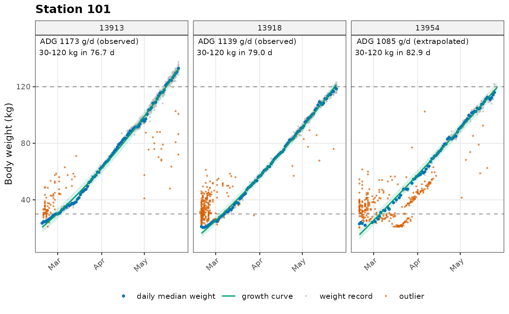
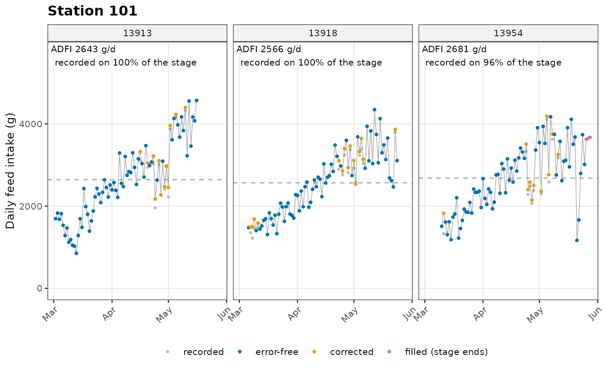

Two example datasets ship with the package, one per station type. They are raw station exports, before any processing.
Small internal tools shared by every function of the package:
verbose = 0/1/2 (silent / summary / details). Messages go
through ppt_msg().as_dt() always returns a
copy, so user objects are never modified; check_cols()
reports missing columns.fit_by_pig() runs a
function on each pig. A pig that fails is recorded and skipped instead
of stopping everything.new_removed() builds the
removed table returned by every analysis step.new_ppt_result() gives
every calc_*() function the same return structure.All quality-control thresholds live in one object created by
qc_config(). Any single parameter can be overridden.
# Default settings
qc <- qc_config()
qc$duration_max
#> [1] 3600
# Override single parameters
qc_config(stage_range = c(40, 110), weight_outlier = c("rlm", "loess", "sd"))
#>
#> ── QC settings ──
#>
#> Station transfer
#> misread_max_visits: 2
#> max_gap_days: 3
#> max_jump_kg: 10
#> Body weight records
#> weight_range: 15, 150
#> adapt_days: 7
#> weight_track: TRUE
#> track_tol: 0.08
#> weight_outlier: rlm , loess, sd
#> outlier_combine: any
#> rlm_cutoff: 0.5
#> sd_max: 3
#> loess_span: 0.75
#> Pig-level checks
#> min_records: 20
#> min_test_days: 35
#> max_missing_rate: 0.3
#> entry_weight_max: 65
#> exit_weight_min: 85
#> track_flag_share: 0.4
#> smooth_r2_min: 0.99
#> Growth and ADG
#> stage_range: 40, 110
#> curve_model: poly2
#> max_extrap_days: 30
#> curve_extrap: start
#> Feeder errors
#> fiv_range: -20, 2000
#> fiv0_abs_max: 20
#> duration_max: 3600
#> speed_fiv_lo_max: 500
#> speed_strict_max: 110
#> speed_range: 2, 170
#> idle_duration_max: 500
#> trough_diff_range: -20, 1800
#> max_unidentified_feed_kg: 90
#> fiv_max_by_weight: NULL (off)
#> Daily feed intake
#> dfi_range: 0, 6
#> dfi_quantile: NULL (off)
#> dfi_correct: lmm
#> impute_method: loess_pop
#> long_gap_days: 3
#> Confidence flags
#> max_edge_extrap_days: 15
#> min_coverage: 0.7
#> bin_width: 10
#> min_bin_coverage_kg: 6
#> bin_fcr_limits: NULL (off)read_station() reads one or many station export files
(or a whole folder) and returns one standard table: the
same column names, types and units for NEDAP and FIRE, ready for
[prep_visits()].
Which column of the export holds which field is described by a
station format. The package has a built-in format for
each station type, so the usual exports need no setup. For an export
with other column names or positions (another software version, Chinese
headers, another device), write the format once as a small tab-separated
file and pass it with format.
station_format("fire", file = "fire_format.txt") writes the
built-in format as a template to start from.
# Write the example data to two CSV files, then read them back
folder <- file.path(tempdir(), "fire_export")
dir.create(folder, showWarnings = FALSE)
data.table::fwrite(fire[fire$Location == 101, ], file.path(folder, "fire_101.csv"))
data.table::fwrite(fire[fire$Location == 102, ], file.path(folder, "fire_102.csv"))
raw <- read_station(folder)
#>
#> ── Reading 2 files ─────────────────────────────────────────────────────────────
#> ℹ Detected station type "fire"
#> ✔ Read 9794 rows from 2 files (FIRE)
head(raw)
#> responder location entry_time exit_time duration
#> <char> <char> <POSc> <POSc> <num>
#> 1: 35877 101 2023-12-19 14:15:39 2023-12-19 14:18:02 NA
#> 2: 35873 101 2023-12-19 14:18:03 2023-12-19 14:23:05 NA
#> 3: 35878 101 2023-12-19 14:23:15 2023-12-19 14:28:45 NA
#> 4: 35855 101 2023-12-19 14:29:05 2023-12-19 14:34:29 NA
#> 5: 35877 101 2023-12-19 14:34:30 2023-12-19 14:34:37 NA
#> 6: 35853 101 2023-12-19 14:34:38 2023-12-19 14:36:26 NA
#> feed_intake weight trough_in trough_out topup source_file
#> <num> <num> <num> <num> <num> <char>
#> 1: 46 67.6 678 632 286 fire_101.csv
#> 2: 248 60.8 632 384 0 fire_101.csv
#> 3: 201 70.8 670 469 286 fire_101.csv
#> 4: 121 51.2 755 634 286 fire_101.csv
#> 5: 0 0.0 634 634 0 fire_101.csv
#> 6: 0 88.6 634 634 0 fire_101.csv
attr(raw, "station")
#> [1] "fire"
# The built-in format, written as a template for other exports
station_format("fire", file = file.path(folder, "fire_format.txt"))
#> ✔ Station format written to /tmp/RtmpAKVcHl/fire_export/fire_format.txt
unlink(folder, recursive = TRUE)A station format says which column of an export holds which standard
field, and in which unit. station_format() shows the
built-in format of a station type and writes it as a template file for
other exports.
station_format("nedap")
#> field column unit required description
#> <char> <char> <char> <lgcl> <char>
#> 1: responder responder - TRUE Transponder number
#> 2: location location - TRUE Station (feeder) ID
#> 3: entry_time visit_time - TRUE Entrance time
#> 4: exit_time - - FALSE Exit time
#> 5: duration duration s FALSE Occupation time
#> 6: feed_intake feed_intake g TRUE Feed intake of the visit
#> 7: weight weight auto TRUE Body weight
#> 8: breed breed - FALSE Breed
station_format("fire")
#> field column unit required description
#> <char> <char> <char> <lgcl> <char>
#> 1: responder Tag - TRUE Transponder number
#> 2: location Location - TRUE Station (feeder) ID
#> 3: entry_time Date,Entry - TRUE Entrance time
#> 4: exit_time Date,Exit - TRUE Exit time
#> 5: feed_intake Consumed kg TRUE Feed intake of the visit
#> 6: weight Weight kg TRUE Body weight
#> 7: trough_in Ent Wt kg TRUE Trough weight at entrance
#> 8: trough_out Ext Wt kg TRUE Trough weight at exit
#> 9: topup Topup Amount kg FALSE Feed dispensed during the visit
#> 10: breed breed - FALSE Breed
# Write a template, edit it, and use it
f <- tempfile(fileext = ".txt")
station_format("fire", file = f)
#> ✔ Station format written to /tmp/RtmpAKVcHl/file1c707c2a00e0.txt
cat(readLines(f), sep = "\n")
#> # tidypptsda station format: FIRE
#> # One line per field, separated by tabs: field, column, unit.
#> # column: column name or position; alternatives with |; date,time joined with ,; - if absent.
#> # unit: kg / g / auto for masses, s / min for duration, - or a strptime format for times.
#> # Required fields: responder, location, entry_time, exit_time, feed_intake, weight, trough_in, trough_out.
#> field column unit
#> responder Tag -
#> location Location -
#> entry_time Date,Entry -
#> exit_time Date,Exit -
#> feed_intake Consumed kg
#> weight Weight kg
#> trough_in Ent Wt kg
#> trough_out Ext Wt kg
#> topup Topup Amount kg
#> breed breed -
unlink(f)prep_visits() turns the output of
read_station() (or a raw NEDAP or FIRE export already in R,
such as the example datasets) into one standard visit table that every
later step uses:
identified = FALSE. They
are needed to compute the differences between subsequent visits on a
feeder (Casey et al. 2005);NA;
visits <- prep_visits(fire)
#>
#> ── Preparing FIRE visits ───────────────────────────────────────────────────────
#> Visits read 9,794
#> └ unidentified (kept, identified = FALSE) 51 0.5%
#> └ crossing midnight (exit time corrected) 68 0.7%
#> └ body weight 0 (set to NA) 478 4.9%
#> ℹ No pig was seen at more than one station
#> ✔ 26 pigs at 2 stations, 9,794 visits over 66 days 0.1s
#> ℹ No breed column. To use breed in the feed intake model and breed-specific limits, add it with `add_breed()`.
head(visits)
#> responder responder_raw identified location date seq_days seq_in_day
#> <char> <char> <lgcl> <char> <Date> <int> <int>
#> 1: 35877 35877 TRUE 101 2023-12-19 1 1
#> 2: 35873 35873 TRUE 101 2023-12-19 1 1
#> 3: 35878 35878 TRUE 101 2023-12-19 1 1
#> 4: 35855 35855 TRUE 101 2023-12-19 1 1
#> 5: 35877 35877 TRUE 101 2023-12-19 1 2
#> 6: 35853 35853 TRUE 101 2023-12-19 1 1
#> seq_in_location entry_time exit_time duration feed_intake
#> <int> <POSc> <POSc> <num> <num>
#> 1: 1 2023-12-19 14:15:39 2023-12-19 14:18:02 143 46
#> 2: 2 2023-12-19 14:18:03 2023-12-19 14:23:05 302 248
#> 3: 3 2023-12-19 14:23:15 2023-12-19 14:28:45 330 201
#> 4: 4 2023-12-19 14:29:05 2023-12-19 14:34:29 324 121
#> 5: 5 2023-12-19 14:34:30 2023-12-19 14:34:37 7 0
#> 6: 6 2023-12-19 14:34:38 2023-12-19 14:36:26 108 0
#> weight trough_in trough_out topup
#> <num> <num> <num> <num>
#> 1: 67.6 678 632 286
#> 2: 60.8 632 384 0
#> 3: 70.8 670 469 286
#> 4: 51.2 755 634 286
#> 5: NA 634 634 0
#> 6: 88.6 634 634 0
# Unidentified visits are kept for the feeder error checks
table(visits$identified)
#>
#> FALSE TRUE
#> 51 9743
# Station history of each pig
head(attr(visits, "stations"))
#> responder location_path main_location n_locations n_transfers transfer
#> <char> <char> <char> <int> <int> <lgcl>
#> 1: 25822 101 101 1 0 FALSE
#> 2: 35853 101 101 1 0 FALSE
#> 3: 35855 101 101 1 0 FALSE
#> 4: 35862 101 101 1 0 FALSE
#> 5: 35865 101 101 1 0 FALSE
#> 6: 35869 101 101 1 0 FALSE
#> misreads longest_gap_days weight_jump_kg
#> <int> <num> <num>
#> 1: 0 0.7254051 NA
#> 2: 0 0.6270370 NA
#> 3: 0 0.6021412 NA
#> 4: 0 0.5934722 NA
#> 5: 0 0.5991898 NA
#> 6: 0 0.6719097 NA
# NEDAP data gets the same columns and units
nedap_visits <- prep_visits(nedap, verbose = 0)
summary(nedap_visits$weight)
#> Min. 1st Qu. Median Mean 3rd Qu. Max. NAs
#> 20.50 43.00 80.00 77.17 106.50 147.75 391Pig breed (or line) usually is not in the station export and cannot
be read from the transponder number. add_breed() merges a
breed table from your own records into the visit table. With a
breed column:
calc_adfi() adds breed as a fixed effect to the
correction model;fiv_max_by_weight limits can differ by breed;calc_fcr() summarises traits by breed.
visits <- prep_visits(nedap, verbose = 0)
# a breed table from your own herd records, one row per pig
pigs <- unique(visits[identified == TRUE, responder])
breeds <- data.frame(responder = pigs, breed = rep(c("YY", "LL"), length.out = length(pigs)))
visits <- add_breed(visits, breeds)
#> ✔ Breed added for 30 of 30 pigs: LL (15), YY (15)
table(unique(visits[identified == TRUE, .(responder, breed)])$breed)
#>
#> LL YY
#> 15 15clean_weight() cleans the body weight records of
identified visits in three layers:
weight_range and weights of the adaptation period
(adapt_days) are flagged;weight_track); then
one or more methods fit a curve to the remaining records of each pig and
flag records far from it:
"rlm" (default): quadratic robust regression with
bisquare weights (MASS::rlm), records with weight below
rlm_cutoff are outliers;"loess" (default): robust LOESS
(family = "symmetric"), residuals beyond
sd_max robust SDs;"stl": STL decomposition of the daily median weight
(weekly period, robust), residuals beyond sd_max robust
SDs. Falls back to LOESS for pigs with fewer than 14 days;"sd": quadratic least squares, residuals beyond
sd_max SDs;Nothing is deleted silently: every record keeps a
qc_flag, and every removed pig is listed in
removed with the reason.
visits <- prep_visits(nedap, verbose = 0)
w <- clean_weight(visits)
#>
#> ── Cleaning body weight (track + rlm + loess) ──────────────────────────────────
#> Weight records 31,472
#> └ adaptation after entry (not used) 3,404 10.8%
#> └ outliers 5,667 18.0%
#> └ by tracking 1,543 4.9%
#> ! Pigs: 28 kept, 1 low confidence, 1 removed 0.5s
w
#>
#> ── <ppt_weight> ──
#>
#> Pigs: 30 (keep 28, low confidence 1, removed 1)
#> $per_pig: 30 rows x 17 columns
#> $daily: 2789 rows x 7 columns
#> $removed: 1 row x 4 columns
#> $records: 31472 rows x 10 columns
# Why pigs were removed
w$removed
#> responder location step reason
#> <char> <char> <char> <char>
#> 1: 15964 101 clean_weight 0 valid weights < 20
# Records flagged as outliers
head(w$records[outlier == TRUE])
#> responder location date seq_days entry_time weight fitted
#> <char> <char> <Date> <int> <POSc> <num> <num>
#> 1: 13913 101 2024-02-19 1 2024-02-19 22:21:41 23.5 NA
#> 2: 13913 101 2024-02-20 2 2024-02-20 01:00:02 23.5 NA
#> 3: 13913 101 2024-02-20 2 2024-02-20 01:05:04 31.0 NA
#> 4: 13913 101 2024-02-20 2 2024-02-20 02:53:50 23.5 NA
#> 5: 13913 101 2024-02-20 2 2024-02-20 04:27:26 24.0 NA
#> 6: 13913 101 2024-02-20 2 2024-02-20 06:52:21 28.5 NA
#> rlm_w outlier qc_flag
#> <num> <lgcl> <char>
#> 1: NA TRUE adaptation
#> 2: NA TRUE adaptation
#> 3: NA TRUE adaptation
#> 4: NA TRUE adaptation
#> 5: NA TRUE adaptation
#> 6: NA TRUE adaptation
# Other outlier methods
w_sd <- clean_weight(visits, qc = qc_config(weight_outlier = c("rlm", "sd")), verbose = 0)
table(w_sd$per_pig$status)
#>
#> keep low_confidence removed
#> 28 1 1calc_adg() estimates average daily gain (ADG) over the
body weight stage stage_range (default 30-120 kg):
curve_model: "poly2" by default,
"poly1", "poly3" or "gompertz";
Gompertz falls back to a quadratic curve when it does not
converge);max_extrap_days before the first and after the last record.
Before the first record the curve is continued by a straight tangent
line with the slope of the first 14 days of records, after the last
record by the curve itself (curve_extrap = "start",
default); "tangent" uses the line at both ends,
"curve" the curve at both ends;"observed"); a day without valid weight
between two recorded days is filled by linear interpolation
("interpolated"); a day before the first or after the last
recorded day is filled by the growth curve ("curve");Every pig gets an adg_type:
"observed": both stage limits are reached inside the
recorded period;"extrapolated": at least one limit needs extrapolation,
but no more than max_extrap_days;"partial": a limit is not reached even after
extrapolation. ADG is then computed over the part of the stage that is
covered;"none": less than 7 days of the stage are covered; ADG
is NA.
visits <- prep_visits(nedap, verbose = 0)
w <- clean_weight(visits, verbose = 0)
adg <- calc_adg(w)
#>
#> ── ADG over 30-120 kg (poly2 curve) ────────────────────────────────────────────
#> Pigs 29
#> └ observed (stage inside the records) 21 72.4%
#> └ extrapolated at the ends 7 24.1%
#> └ partial (stage not fully reached) 1 3.4%
#> ! 1 pig does not reach the whole stage: ADG is based on part of it (adg_type = "partial").
#> ✔ ADG 1205 ± 133 g/d (mean ± SD) 0.3s
head(adg$per_pig[, .(responder, adg_type, start_date, end_date, stage_days, adg)])
#> responder adg_type start_date end_date stage_days adg
#> <char> <char> <Date> <Date> <num> <num>
#> 1: 13913 observed 2024-03-02 2024-05-16 75.56102 1209.897
#> 2: 13918 observed 2024-03-06 2024-05-24 78.43858 1162.966
#> 3: 13954 extrapolated 2024-03-10 2024-05-28 79.28093 1124.224
#> 4: 13996 observed 2024-02-28 2024-05-07 69.15285 1334.979
#> 5: 14962 observed 2024-02-26 2024-05-07 70.15055 1278.746
#> 6: 15006 observed 2024-02-28 2024-05-07 68.69428 1317.472
# Gompertz curve, with quadratic fallback
adg_g <- calc_adg(w, qc = qc_config(curve_model = "gompertz"), verbose = 0)
table(adg_g$per_pig$curve_used)
#>
#> gompertz + tangent (start)
#> 29
# Source of the daily weights over the stage
table(adg$daily[in_stage == TRUE, source])
#>
#> curve interpolated observed
#> 37 12 2158flag_feed_errors() applies the 16 error criteria of
Casey et al. (2005, Table 3) to every visit.
The seven variables are computed on the complete visit sequence of each feeder, including unidentified visits, sorted by entrance time:
| # | Error | Visits considered | Threshold (default) |
|---|---|---|---|
| 1 | FIV-lo | all | FIV < -20 g |
| 2 | FIV-hi | all | FIV > 2000 g |
| 3 | FIV-0 | OTV = 0 | |FIV| > 20 g |
| 4 | OTV-lo | all | OTV < 0 s |
| 5 | OTV-hi | all | OTV > 3600 s |
| 6 | FRV-hi-FIV-lo | 0 < FIV < 50 g | FRV > 500 g/min |
| 7 | FRV-hi-strict | FIV >= 50 g, preceding or following visit FIV < -20 g | FRV > 110 g/min |
| 8 | FRV-hi | FIV >= 50 g, neither neighbour FIV < -20 g | FRV > 170 g/min |
| 9 | FRV-0 | FRV = 0 | OTV > 500 s |
| 10 | FRV-lo | FRV != 0 | |FRV| <= 2 g/min |
| 11-12 | LWD-lo / LWD-hi | all but the last visit on the feeder | LWD < -20 g / > 1800 g |
| 13-14 | FWD-lo / FWD-hi | all but the first visit on the feeder | FWD < -20 g / > 1800 g |
| 15 | LTD-lo | all but the last visit | LTD < 0 s |
| 16 | FTD-lo | all but the first visit | FTD < 0 s |
The thresholds come from [qc_config()]. Feed disappearance in
unidentified visits (-20 g <= FIV <= 2000 g) is summed per feeder;
Casey et al. discarded pens above 90 kg, here a warning is given above
max_unidentified_feed_kg.
visits <- prep_visits(fire, verbose = 0)
flagged <- flag_feed_errors(visits, verbose = 2)
#>
#> ── Flagging feeder errors (Casey et al. 2005) ──────────────────────────────────
#> ✔ 2.62% of 9,743 identified visits with at least one error 0.0s
#> • FRV-lo: 64 (0.66%)
#> • LWD-hi: 60 (0.62%)
#> • FWD-hi: 60 (0.62%)
#> • FIV-lo: 33 (0.34%)
#> • FRV-hi: 28 (0.29%)
#> • FIV-hi: 21 (0.22%)
#> • LWD-lo: 5 (0.05%)
#> • FRV-hi-strict: 4 (0.04%)
#> • FWD-lo: 4 (0.04%)
#> • FRV-0: 1 (0.01%)
attr(flagged, "feeders")
#> location n_visits n_unidentified unidentified_feed_kg error_rate
#> <char> <int> <int> <num> <num>
#> 1: 101 6014 30 2.148 0.01788102
#> 2: 102 3780 21 0.621 0.03937217calc_adfi() estimates average daily feed intake (ADFI)
over the same body weight stage as [calc_adg()], so that FCR compares
like with like.
Correction (Jiao et al. 2014, after Casey et
al. 2005): for each pig and day, the error-free intake y
(sum of FIV over visits without error) is modelled with a linear mixed
model fitted on all pig-days:
y ~ location + breed + BW + ADG + 16 x PTE + 11 x OTD + 4 x FID + (1 | pig)
weight_filled); ADG of the
pig;location is a fixed effect when there is more than one
station, and breed when the data have a breed
column (see [add_breed()]) with more than one breed.The corrected intake is y - sum(b x error covariates):
only the effects of the error covariates are removed, so a day without
errors keeps its recorded intake. Covariates without variation or
perfectly collinear with others are dropped before fitting. Days on
which every visit has an error have no error-free intake and are
imputed.
Checks and imputation over the stage days of each pig:
dfi_range, or outside
the optional dfi_quantile limits is set to missing;long_gap_days (3) days between recorded
days is filled from a robust LOESS smooth of the daily intake over the
days;impute_method = "loess_pop" (default): a longer gap,
and the days before the first recorded day, are filled from the
population curve of daily intake on body weight, scaled
to the pig: dfi = r * f(bw). f is a quadratic
regression of daily intake on body weight over the recorded stage days
of all pigs (of each breed with at least 10 pigs when there is a
breed column; other pigs use the curve of all pigs), held
constant beyond the weights it was fitted on. r is the
pig’s intake level, its recorded intake divided by f over
its recorded stage days, shrunk towards 1 with weight
n / (n + 10) for n recorded days. A single pig
rarely covers the whole stage, so its own regression on weight is often
flat or steep where it has data and goes wrong far from it (a late entry
gets the intake of 60 kg at 30 kg); the population curve gives the
shape, the pig its level. The days after the last recorded
day are filled by the pig’s own linear regression of daily
intake on body weight: a pig that leaves early has recorded its late
trend itself, while the population curve flattens at high weights and
underestimated its late intake (by 43-129 g/d when 20-30 days were
missing at the end, in a leakage-free check on 457 pigs);impute_method = "loess_lm": the longer gaps and the
ends by a per-pig linear regression of daily intake on body weight (the
method before version 1.3.0);impute_method = "linear": linear interpolation between
recorded days (whatever the gap length), the per-pig regression on body
weight at the ends.Use [validate_truncation()] to compare the methods on your own data:
it removes all visits of some pigs over some days and reruns the whole
pipeline, so nothing of the hidden days leaks into the result
([validate_adfi()] is faster and looks at the imputation step alone). In
such a check on 457 NEDAP pigs, with 20 days missing at the start, the
ADFI error was 7.5% with "loess_lm" and 4.9% with
"loess_pop" and curve_extrap = "start"; at the
end, "loess_pop" keeps the unbiased per-pig regression.
Precision still depends mainly on how many days are missing at the stage
ends, which is why such pigs are flagged by [calc_fcr()].
Day states: "org" (no error, recorded value),
"corr" (corrected), "iii" (filled between
recorded days), "elrp" (filled before the first or after
the last recorded day), "missing".
visits <- prep_visits(nedap, verbose = 0)
w <- clean_weight(visits, verbose = 0)
adg <- calc_adg(w, verbose = 0)
adfi <- calc_adfi(visits, adg)
#>
#> ── Flagging feeder errors (Casey et al. 2005) ──────────────────────────────────
#> ✔ 1.58% of 31,652 identified visits with at least one error 0.0s
#>
#> ── ADFI over 30-120 kg ─────────────────────────────────────────────────────────
#> ℹ Correction model: 2575 pig-days, 10 error covariates
#> ℹ Population curve of intake on body weight: all (29 pigs)
#> Stage pig-days 2,207
#> └ recorded without error (org) 1,905 86.3%
#> └ corrected (corr) 270 12.2%
#> └ filled between records (iii) 1 <0.1%
#> └ filled at the stage ends (elrp) 31 1.4%
#> └ outside dfi_range 1 <0.1%
#> ✔ ADFI 2845 ± 360 g/d (mean ± SD) 0.1s
head(adfi$per_pig)
#> responder location stage adfi adg_type adfi_raw adfi_error_free
#> <char> <char> <char> <num> <char> <num> <num>
#> 1: 13913 101 30-120 2642.654 observed 2624.829 2623.974
#> 2: 13918 101 30-120 2566.372 observed 2540.500 2539.662
#> 3: 13954 101 30-120 2681.418 extrapolated 2622.948 2622.221
#> 4: 13996 101 30-120 2860.245 observed 2839.957 2836.714
#> 5: 14962 101 30-120 2830.550 observed 2816.375 2816.083
#> 6: 15006 101 30-120 3121.544 observed 3107.429 3107.229
#> n_stage_days n_observed n_corrected n_interpolated n_extrapolated n_missing
#> <int> <int> <int> <int> <int> <int>
#> 1: 76 76 12 0 0 0
#> 2: 80 80 15 0 0 0
#> 3: 80 77 11 0 3 0
#> 4: 70 70 7 0 0 0
#> 5: 72 72 8 0 0 0
#> 6: 70 70 7 0 0 0
#> n_extrap_start n_extrap_end coverage
#> <int> <int> <num>
#> 1: 0 0 1.0000
#> 2: 0 0 1.0000
#> 3: 0 3 0.9625
#> 4: 0 0 1.0000
#> 5: 0 0 1.0000
#> 6: 0 0 1.0000
table(adfi$daily[in_stage == TRUE, state])
#>
#> corr elrp iii org
#> 270 31 1 1905
head(adfi$model)
#> term estimate std_error p_value
#> <char> <num> <num> <num>
#> 1: (Intercept) -1034.723262 306.8930401 7.585135e-04
#> 2: location102 -2.797787 63.2856637 9.650757e-01
#> 3: bw 23.338374 0.3577956 0.000000e+00
#> 4: adg 1.725667 0.2444888 1.703038e-07
#> 5: pte_fiv_hi -11834.326757 5882.7526284 4.435732e-02
#> 6: pte_otv_hi -1931.619656 3368.2285196 5.663690e-01calc_fcr() combines ADG and ADFI, both computed over the
same body weight stage, into the feed conversion ratio FCR = ADFI / ADG
(kg feed per kg gain) and its inverse, feed efficiency G:F = ADG /
ADFI.
Each pig gets fcr_flag = "ok" or
"low_confidence", with the reasons in
fcr_note: the growth curve or the feed intake extrapolated
over more than max_edge_extrap_days (default 15) at the
start or end of the stage, an inner 10 kg class with recorded weights
spanning less than min_bin_coverage_kg (default 6 kg), a
segment FCR outside the optional bin_fcr_limits, ADG on
part of the stage only, less than min_coverage (default
0.7) of the stage with recorded feed intake, or weight data flagged by
[clean_weight()].
visits <- prep_visits(nedap, verbose = 0)
adg <- calc_adg(clean_weight(visits, verbose = 0), verbose = 0)
adfi <- calc_adfi(visits, adg, verbose = 0)
fcr <- calc_fcr(adg, adfi)
#>
#> ── FCR over 30-120 kg ──────────────────────────────────────────────────────────
#> Pigs with FCR 29
#> └ ok 23 79.3%
#> └ low confidence 6 20.7%
#> ✔ FCR 2.36 ± 0.14 (mean ± SD) 0.0s
head(fcr$per_pig[, .(responder, adg, adfi, fcr, fcr_flag, fcr_note)])
#> responder adg adfi fcr fcr_flag
#> <char> <num> <num> <num> <char>
#> 1: 13913 1209.897 2642.654 2.184196 ok
#> 2: 13918 1162.966 2566.372 2.206747 ok
#> 3: 13954 1124.224 2681.418 2.385127 low_confidence
#> 4: 13996 1334.979 2860.245 2.142538 ok
#> 5: 14962 1278.746 2830.550 2.213536 ok
#> 6: 15006 1317.472 3121.544 2.369343 ok
#> fcr_note
#> <char>
#> 1:
#> 2:
#> 3: weight records cover 5.0 kg of 80-90 kg
#> 4:
#> 5:
#> 6:
fcr$summary[group == "all"]
#> group trait n min max median
#> <char> <char> <int> <num> <num> <num>
#> 1: all adg 29 821.6537633 1404.1822971 1230.4801777
#> 2: all adfi 29 1962.8256429 3540.2716430 2812.5426352
#> 3: all fcr 29 2.1425384 2.7773018 2.3685027
#> 4: all gf 29 0.3600617 0.4667361 0.4222077
#> 5: all stage_days 29 65.0686763 96.0346641 73.5551659
#> 6: all start_weight 29 29.9999925 30.0000105 30.0000000
#> 7: all end_weight 29 81.7066712 120.0000038 119.9999997
#> mean sd cv
#> <num> <num> <num>
#> 1: 1205.2355800 1.325465e+02 1.099756e-01
#> 2: 2844.9425395 3.600194e+02 1.265472e-01
#> 3: 2.3608004 1.423354e-01 6.029118e-02
#> 4: 0.4250185 2.470859e-02 5.813534e-02
#> 5: 75.0289278 7.602231e+00 1.013240e-01
#> 6: 29.9999998 3.541864e-06 1.180622e-07
#> 7: 118.6795398 7.110893e+00 5.991675e-02One plot per station, one panel per pig. Axes adapt to the data and
to stage_range, so no point is dropped. Colours come from a
colour-blind safe palette (Okabe-Ito) without extra packages.
visits <- prep_visits(nedap, verbose = 0)
w <- clean_weight(visits, verbose = 0)
adg <- calc_adg(w, verbose = 0)
adfi <- calc_adfi(visits, adg, verbose = 0)
g <- plot_adg(adg, weight = w, locations = "101", responders = c("13913", "13918", "13954"))
#> ✔ Created 1 growth plot
g$plot[[1]]
f <- plot_adfi(adfi, responders = c("13913", "13918", "13954"))
#> ✔ Created 1 feed intake plot
f$plot[[1]]
out <- save_plots(g, path = tempdir(), prefix = "loc", suffix = "growth", device = "pdf")
#> ✔ Saved 1 of 1 plot to /tmp/RtmpAKVcHl
file.exists(out$file)
#> [1] TRUE
unlink(out$file)run_pipeline() runs every step with one set of QC
settings and keeps all intermediate results.
res <- run_pipeline(fire, qc = qc_config(stage_range = c(60, 120)), verbose = 0)
res
#> ╭ Results FIRE ───────────────────────────────────────────────────────────╮
#> │ Pigs 26 in the data · 25 with FCR (21 ok, 4 low confidence) · 1 removed │
#> │ ADG 1207 ± 106 g/d │
#> │ ADFI 3249 ± 250 g/d │
#> │ FCR 2.70 ± 0.16 │
#> │ │
#> │ Check │
#> │ 25822 (101): weight records cover 5.1 kg of 70-80 kg │
#> │ 35858 (102): weight records cover 4.4 kg of 100-110 kg │
#> │ 35892 (102): weight data flagged │
#> │ 35897 (102): weight data flagged │
#> │ 35888 (101): removed, test period 9 d < 35 d │
#> │ │
#> │ Next: plot_adg(), plot_adfi(), write_report(), write_results() │
#> ╰───────────────────────────────────────────────────────────────────────────╯
res$fcr$summary[group == "all"]
#> group trait n min max median
#> <char> <char> <int> <num> <num> <num>
#> 1: all adg 25 939.7806629 1455.9297415 1205.5702281
#> 2: all adfi 25 2591.1968792 3875.9180223 3220.8402264
#> 3: all fcr 25 2.3545315 3.0172000 2.6729084
#> 4: all gf 25 0.3314331 0.4247129 0.3741243
#> 5: all stage_days 25 40.4287257 63.3513721 48.9403502
#> 6: all start_weight 25 59.9999805 60.0000044 59.9999959
#> 7: all end_weight 25 119.9999801 120.0000042 119.9999944
#> mean sd cv
#> <num> <num> <num>
#> 1: 1207.2469699 1.058301e+02 8.766236e-02
#> 2: 3249.3079139 2.503801e+02 7.705644e-02
#> 3: 2.6982479 1.577920e-01 5.847943e-02
#> 4: 0.3718191 2.159314e-02 5.807431e-02
#> 5: 49.6475333 4.745273e+00 9.557922e-02
#> 6: 59.9999954 5.704224e-06 9.507041e-08
#> 7: 119.9999944 4.646078e-06 3.871732e-08write_report() writes the results as a small website to
browse like a book: one page per station with its growth and feed intake
plots and a table of its pigs, and an overview page in front. Arrow keys
turn the pages; a pig ID in the search box jumps to its station.
res <- run_pipeline(nedap, verbose = 0)
dir <- file.path(tempdir(), "report")
write_report(res, dir)
#>
#> ── Writing the HTML report ─────────────────────────────────────────────────────
#> Saving plots ■■■■■■■■■■■■■■■ 2/4 | ETA 2s
#> Saving plots ■■■■■■■■■■■■■■■ 4/4 | ETA 0s
#> ✔ Saved 4 of 4 plots to /tmp/RtmpAKVcHl/report/img
#> ✔ Report of 2 stations written to /tmp/RtmpAKVcHl/report/index.html 3.4s
# then open file.path(dir, "index.html") in a web browserwrite_results() writes the tables of an analysis to CSV
files named <farm>_<table>_<date>.csv,
ready to send to the testing station. Files are UTF-8 with a byte order
mark so that Excel shows Chinese text correctly.
res <- run_pipeline(nedap, verbose = 0)
out <- write_results(res, dir = file.path(tempdir(), "results"), farm = "demo")
#> ✔ Wrote 9 files to /tmp/RtmpAKVcHl/results
out
#> table file rows
#> <char> <char> <int>
#> 1: fcr /tmp/RtmpAKVcHl/results/demo_fcr_20261029.csv 29
#> 2: by_bin /tmp/RtmpAKVcHl/results/demo_by_bin_20261029.csv 258
#> 3: daily_feed /tmp/RtmpAKVcHl/results/demo_daily_feed_20261029.csv 2820
#> 4: daily_weight /tmp/RtmpAKVcHl/results/demo_daily_weight_20261029.csv 2607
#> 5: weight_pigs /tmp/RtmpAKVcHl/results/demo_weight_pigs_20261029.csv 30
#> 6: feed_model /tmp/RtmpAKVcHl/results/demo_feed_model_20261029.csv 14
#> 7: summary /tmp/RtmpAKVcHl/results/demo_summary_20261029.csv 14
#> 8: removed /tmp/RtmpAKVcHl/results/demo_removed_20261029.csv 1
#> 9: settings /tmp/RtmpAKVcHl/results/demo_settings_20261029.csv 43
unlink(file.path(tempdir(), "results"), recursive = TRUE)Four functions check how well the methods of one step work on your own data, by hiding or spoiling part of the data on purpose and measuring how close the result comes to what is known:
validate_outliers() adds artificial errors to clean
weight records and measures how many each outlier method finds, how many
good records it removes, and how much ADG is affected. The clean records
are those that no compared method flags
(reference = "consensus"), so that no method is
favoured;validate_adg() compares growth curve models (and, with
extrap, the extrapolation) by blocked k-fold
cross-validation (blocks of block_days days), and by how
much ADG changes when the first or last days of the test are hidden
(late entry, early exit);validate_weight_fill() hides recorded daily weights of
the stage (random days, blocks, start or end), fills them again with
each weight fill method and compares the filled weights and ADG with the
recorded ones;validate_adfi() hides recorded feed intake days in the
same way, imputes them again with each method ("loess_pop"
with leave-one-out population curves, "loess_lm",
"linear") and compares ADFI with the recorded value. With
weight, the body weight of the hidden days is computed
again without them.In all of them, the weight records of the hidden days are removed before cleaning, and the rest is cleaned again, so the hidden days do not decide which of the other records are kept (since 1.5.0).
visits <- prep_visits(nedap, verbose = 0)
w <- clean_weight(visits, verbose = 0)
# 1. weight outlier methods: 5% artificial errors of 3-15 kg
vo <- validate_outliers(visits, reps = 1)
#>
#> ── Validating weight outlier methods ───────────────────────────────────────────
#> ℹ 7 methods · 5% artificial errors of 3-15 kg (both) · 1 repetition · reference: consensus
#> ⠙ [1/3] Clean records ■■■■■■■■■■■■■■■ 0/8 | ETA ?
#> ⠹ [1/3] Clean records ■■■■■■■■■■■■■■■ 1/8 | ETA 3s
#> ⠸ [1/3] Clean records ■■■■■■■■■■■■■■■ 2/8 | ETA 3s
#> ⠼ [1/3] Clean records ■■■■■■■■■■■■■■■ 3/8 | ETA 2s
#> ⠴ [1/3] Clean records ■■■■■■■■■■■■■■■ 4/8 | ETA 2s
#> ⠦ [1/3] Clean records ■■■■■■■■■■■■■■■ 5/8 | ETA 1s
#> ⠧ [1/3] Clean records ■■■■■■■■■■■■■■■ 6/8 | ETA 1s
#> ⠇ [1/3] Clean records ■■■■■■■■■■■■■■■ 7/8 | ETA 0s
#> ⠇ [1/3] Clean records ■■■■■■■■■■■■■■■ 8/8 | ETA 0s
#> ✔ [1/3] Clean records (8 cleanings) 2.9s
#> → [2/3] Reference ADG of the clean records ...
#> ✔ [2/3] Reference ADG of the clean records 0.5s
#> [3/3] Spoiled data, each method ■■■■■■■■■■■■■■■ 3/8 | ETA 3s
#> [3/3] Spoiled data, each method ■■■■■■■■■■■■■■■ 8/8 | ETA 0s
#> ✔ [3/3] Spoiled data, each method (8 runs) 4.4s
#> ✔ Done in 7.9s · details in $summary
#> 25,579 clean records of 29 pigs, 5% spoiled
#> errors found good removed ADG bias g/d ADG RMSE g/d
#> none 1.1% 0.00% -0.1 1.0
#> track+rlm+loess 94.3% 0.54% 0.6 2.1
#> track 67.9% 0.04% 0.1 1.0
#> rlm 90.0% 0.20% 0.3 1.5
#> loess 91.0% 0.00% 0.0* 0.7
#> rlm+loess 92.7% 0.20% 0.3 1.5
#> stl 95.3%* 0.29% 0.1 0.7*
#> sd 59.8% 0.00%* -0.2 1.1
vo$summary
#> method sensitivity false_positive_rate precision adg_bias
#> <char> <num> <num> <num> <num>
#> 1: none 0.01147666 0.000000e+00 1.0000000 -0.11659561
#> 2: track+rlm+loess 0.94338179 5.355966e-03 0.9046222 0.60896392
#> 3: track 0.67865340 3.707976e-04 0.9899554 0.08810530
#> 4: rlm 0.89977047 1.977587e-03 0.9607843 0.34852591
#> 5: loess 0.91048202 4.119974e-05 0.9991604 0.01913494
#> 6: rlm+loess 0.92654935 1.977587e-03 0.9618745 0.32561561
#> 7: stl 0.95256312 2.883982e-03 0.9467681 0.14346024
#> 8: sd 0.59831676 0.000000e+00 1.0000000 -0.24175573
#> adg_rmse adg_spearman n_pigs
#> <num> <num> <num>
#> 1: 1.0261373 0.9995074 29
#> 2: 2.1436768 0.9990148 29
#> 3: 0.9870266 0.9995074 29
#> 4: 1.5429075 0.9990148 29
#> 5: 0.7442768 0.9995074 29
#> 6: 1.5014817 0.9990148 29
#> 7: 0.7311463 0.9990148 29
#> 8: 1.1217394 0.9990148 29
# 2. growth curve models
va <- validate_adg(w, models = c("poly1", "poly2", "poly3"))
#>
#> ── Validating growth curves ────────────────────────────────────────────────────
#> ℹ 29 pigs · 3 models · 5-fold CV in 7-day blocks · truncation 10, 20 days
#> ⠙ [1/3] Re-cleaning CV folds ■■■■■■■■■■■■■■■ 0/5 | ETA ?
#> ⠹ [1/3] Re-cleaning CV folds ■■■■■■■■■■■■■■■ 1/5 | ETA 2s
#> ⠸ [1/3] Re-cleaning CV folds ■■■■■■■■■■■■■■■ 2/5 | ETA 1s
#> ⠼ [1/3] Re-cleaning CV folds ■■■■■■■■■■■■■■■ 3/5 | ETA 1s
#> ⠴ [1/3] Re-cleaning CV folds ■■■■■■■■■■■■■■■ 4/5 | ETA 0s
#> ⠴ [1/3] Re-cleaning CV folds ■■■■■■■■■■■■■■■ 5/5 | ETA 0s
#> ✔ [1/3] Re-cleaning CV folds (5 folds) 2.1s
#> ⠙ [2/3] Re-cleaning truncations ■■■■■■■■■■■■■■■ 0/4 | ETA ?
#> ⠹ [2/3] Re-cleaning truncations ■■■■■■■■■■■■■■■ 1/4 | ETA 2s
#> ⠸ [2/3] Re-cleaning truncations ■■■■■■■■■■■■■■■ 2/4 | ETA 1s
#> ⠼ [2/3] Re-cleaning truncations ■■■■■■■■■■■■■■■ 3/4 | ETA 0s
#> ⠼ [2/3] Re-cleaning truncations ■■■■■■■■■■■■■■■ 4/4 | ETA 0s
#> ✔ [2/3] Re-cleaning truncations (4 truncations) 1.7s
#> [3/3] Fitting the curves ■■■■■■■■■■■■■■■ 17/29 | ETA 2s
#> [3/3] Fitting the curves ■■■■■■■■■■■■■■■ 29/29 | ETA 0s
#> ✔ [3/3] Fitting the curves (29 pigs x 3 models) 4.0s
#> ✔ Done in 7.9s · details in $summary
#> Cross-validation error (median over pigs, kg) and ADG error after truncation
#> (RMSE, g/d)
#> CV kg CV > 10 kg late10 early10 late20 early20
#> poly1+start 1.76 0.0% 23.6* 21.5* 29.0 51.9
#> poly2+start 1.75 0.0% 31.3 23.0 28.2* 49.9*
#> poly3+start 1.61* 0.0% 37.2 23.9 36.2 60.1
va$summary
#> Key: <model>
#> model cv_rmse cv_mae cv_share_over bias_late10 rmse_late10
#> <char> <num> <num> <num> <num> <num>
#> 1: poly1+start 1.757314 1.414229 0 11.42217 23.62835
#> 2: poly2+start 1.752470 1.400581 0 24.01446 31.34774
#> 3: poly3+start 1.608416 1.264054 0 26.10989 37.18375
#> spearman_late10 n_late10 bias_early10 rmse_early10 spearman_early10
#> <num> <int> <num> <num> <num>
#> 1: 0.9600985 29 4.304331 21.47237 0.9965517
#> 2: 0.9694581 29 7.430822 22.99317 0.9960591
#> 3: 0.9586207 29 4.828772 23.93255 0.9960591
#> n_early10 bias_late20 rmse_late20 spearman_late20 n_late20 bias_early20
#> <int> <num> <num> <num> <int> <num>
#> 1: 29 -5.101753 29.02241 0.9389163 29 0.2360863
#> 2: 29 9.869637 28.23587 0.9467980 29 14.0993443
#> 3: 29 16.996585 36.22437 0.9147783 29 -3.1912060
#> rmse_early20 spearman_early20 n_early20
#> <num> <num> <int>
#> 1: 51.85206 0.9714286 29
#> 2: 49.89048 0.9758621 29
#> 3: 60.12357 0.9325123 29
# 3. weight fill methods
vw <- validate_weight_fill(w, methods = c("linear", "poly2"),
scenarios = c("blocks3", "late20"), reps = 1)
#>
#> ── Validating weight fill methods ──────────────────────────────────────────────
#> ℹ 29 pigs · 2 methods · 2 scenarios · 1 repetition
#> ✔ [1/4] Reference ADG and hidden days (29 pigs) 0.2s
#> ⠙ [2/4] Re-cleaning masks ■■■■■■■■■■■■■■■ 0/2 | ETA ?
#> ⠹ [2/4] Re-cleaning masks ■■■■■■■■■■■■■■■ 1/2 | ETA 0s
#> ⠹ [2/4] Re-cleaning masks ■■■■■■■■■■■■■■■ 2/2 | ETA 0s
#> ✔ [2/4] Re-cleaning masks (2 masks) 0.7s
#> ✔ [3/4] Filling the hidden days (29 pigs x 2 masks x 2 methods) 0.7s
#> ✔ Done in 1.7s · details in $summary
#> Daily weight error on the hidden days (RMSE, kg)
#> blocks3 late20
#> linear+start 0.93* 2.43*
#> poly2+start 1.42 2.70
#> ADG error (RMSE, g/d)
#> blocks3 late20
#> linear+start 5.1* 50.4*
#> poly2+start 9.9 51.7
vw$summary
#> scenario method daily_rmse daily_mae daily_bias adg_bias adg_rmse
#> <char> <char> <num> <num> <num> <num> <num>
#> 1: blocks3 linear+start 0.9280818 0.6722406 0.01704015 -0.7973775 5.118390
#> 2: blocks3 poly2+start 1.4165707 1.1360263 -0.03049167 -5.8986291 9.871986
#> 3: late20 linear+start 2.4261210 1.6707774 0.35260669 -6.7740568 50.394127
#> 4: late20 poly2+start 2.7036040 2.1173202 0.75794465 -10.8701574 51.672192
#> adg_spearman n_pigs
#> <num> <int>
#> 1: 0.9970443 29
#> 2: 0.9931034 29
#> 3: 0.9216749 29
#> 4: 0.9128079 29
# 4. feed intake imputation
adfi <- calc_adfi(visits, calc_adg(w, verbose = 0), verbose = 0)
vf <- validate_adfi(adfi, w, scenarios = c("random30", "late20"), reps = 2)
#>
#> ── Validating feed intake imputation ───────────────────────────────────────────
#> ℹ 29 pigs with coverage >= 0.8 · 3 methods · 2 scenarios · 2 repetitions · body weight without the hidden days
#> → [1/3] Leave-one-out population curves ...
#> ✔ [1/3] Leave-one-out population curves 0.0s
#> ⠙ [2/3] Body weight per mask ■■■■■■■■■■■■■■■ 0/4 | ETA ?
#> ⠹ [2/3] Body weight per mask ■■■■■■■■■■■■■■■ 1/4 | ETA 2s
#> ⠸ [2/3] Body weight per mask ■■■■■■■■■■■■■■■ 2/4 | ETA 1s
#> ⠼ [2/3] Body weight per mask ■■■■■■■■■■■■■■■ 3/4 | ETA 1s
#> ⠼ [2/3] Body weight per mask ■■■■■■■■■■■■■■■ 4/4 | ETA 0s
#> ✔ [2/3] Body weight per mask (4 masks) 2.4s
#> ✔ [3/3] Imputing the hidden days (29 pigs x 4 masks x 3 methods) 1.4s
#> ✔ Done in 3.9s · details in $summary
#> ADFI error (mean absolute error, % of the recorded ADFI)
#> random30 late20
#> loess_pop 1.05 1.34*
#> loess_lm 1.05* 4.49
#> linear 1.06 4.49
#> Rank correlation of ADFI with the recorded ADFI
#> random30 late20
#> loess_pop 0.990 0.980*
#> loess_lm 0.990* 0.954
#> linear 0.983 0.954
vf$summary
#> scenario method mean_abs_error_pct p95_abs_error_pct bias_pct
#> <char> <char> <num> <num> <num>
#> 1: random30 loess_pop 1.054756 2.747063 0.08312500
#> 2: random30 loess_lm 1.049116 2.652649 0.09695811
#> 3: random30 linear 1.059801 3.446624 0.12860912
#> 4: late20 loess_pop 1.336754 3.504007 -0.29738898
#> 5: late20 loess_lm 4.485321 7.063380 4.26201154
#> 6: late20 linear 4.485321 7.063380 4.26201154
#> spearman daily_rmse n_pigs
#> <num> <num> <int>
#> 1: 0.9896552 454.9470 29
#> 2: 0.9899015 454.8497 29
#> 3: 0.9834975 491.0849 29
#> 4: 0.9802956 321.3658 29
#> 5: 0.9536946 678.6888 29
#> 6: 0.9536946 678.6888 29